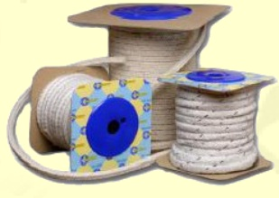
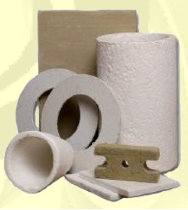

Termoizolacje
Hasłem naszych czasów jest racjonalne gospodarowanie energią. Wykładnikiem postęputechnicznego dla
użytkownika jest stosowanie nowoczesnych izolacji termicznych.
ermoizolacje charakteryzują się:
- Ogniotrwałością do 1500°C
- Niską gęstością pozorną do 1,5 g/cm3
- Porowatością otwartą od 40% do 85%
- Niskim współczynnikiem przewodności cieplnej poniżej 0,6W/mK

Różnorodne technologie produkcji gwarantują znakomitą jakość asortymentu takiego jak:
- szczeliwa i sznury plecionestosowane są głównie dotermicznej izolacji mediów zarówno gorących, jak i
zimnych,różnego rodzaju przewodów wodnych, parowych,uszczelniania kotłów, zbiorników, komór
piecowych
- taśmy i tkaniny termoizolacyjneizolacje cieplne wszelkiego typu maszyn, urządzeń i instalacji, gdzie
występuje kontakt z wysokimi temperaturami. Szczególnie często stosuje się je jako ekrany cieplne,
izolacje w procesie wygrzewania konstrukcji spawanych czy osłony węży lub kabli pracujących w
pobliżu źródeł ciepła.Stosuje się je również jako uszczelnienia statyczne wszędzie tam, gdzie
wysokim temperaturom towarzyszą stosunkowo niskie ciśnienia uszczelnianego medium i/lub duże
nierówności kołnierzy. Taśm tych używa się również na przenośnikach taśmowych do transportu gorących
przedmiotów i materiałów.
- tektury termoizolacyjne termicznej z użyciem termoodpornych wypełniaczy i lepiszczy metodami
papierniczymi. Charakteryzuje je doskonała termiczna odporność na znaczne obciążenia mechaniczne
pozwala na tektury jako materiału uszczelniającego.
- płyty CV produkowane są w wersji twardej i elastycznej w formatach 1000x1000 mm i 1000x500mm,
grubość od 5,0 mm do 200 mm, powyżej 200 mm wykonywane płyty są klejone.
Oferujemy także kształtki CV: rury, cylindry, stożki, zatyczki, łuki, pierścienie i rynny ceramicznych i
odpowiednio dobranych spoiw. Charakteryzują się wysoką odpornością termiczną, niską przewodnością
cieplną, niską gęstością i doskonałą odpornością na zmiany temperatury. Ze względu na doskonałą
termoizolacyjność, odporność na wstrząsy cieplne, odporność termiczną oraz łatwość obróbki (także
mechaniczną – frezowanie) produkty te znajdują zastosowanie w energetyce, hutnictwie, odlewnictwie i w
przemyśle ceramicznym
